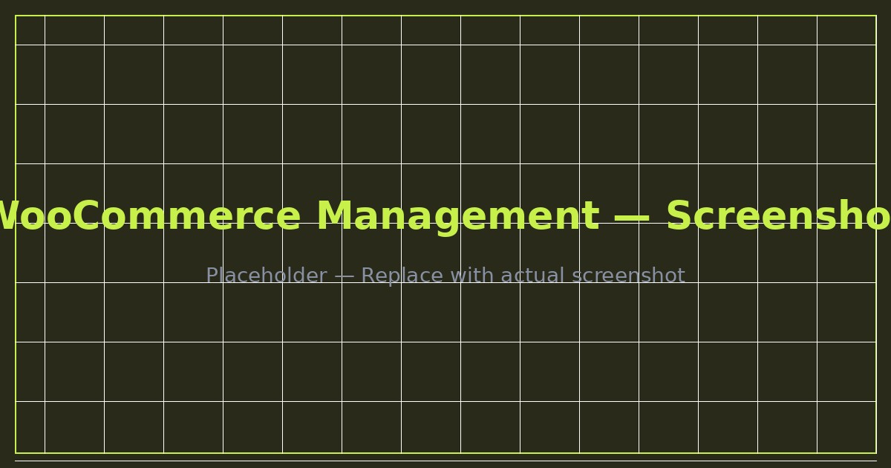

Overview
The client ran a growing online store with a complex product catalog consisting primarily of variable products with multiple attributes. The store had recurring issues with shipping rates, checkout errors, and product configuration — all of which needed ongoing attention.
My role was to act as the technical backend manager, handling everything that kept the store running smoothly while the client focused on sales and marketing.
Deliverables
- Product catalog management (50+ variable products)
- Shipping rate configuration and troubleshooting
- Checkout issue diagnosis and resolution
- Plugin updates and compatibility checks
- Backend performance monitoring
- New product setup and attribute configuration
- Order management support
- Regular store audits and optimization
Tech Stack & Tools
Key Results
50+Products managed
↓Checkout errors resolved
🌍Global shipping configured
Screenshots
